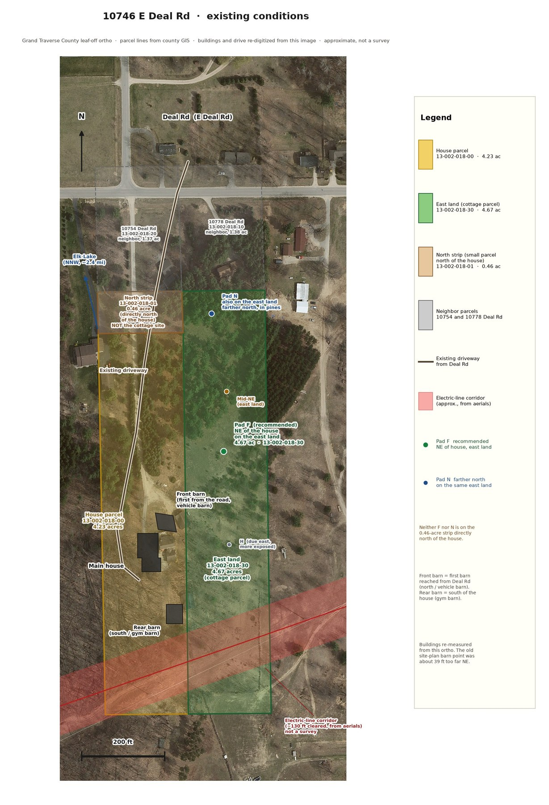
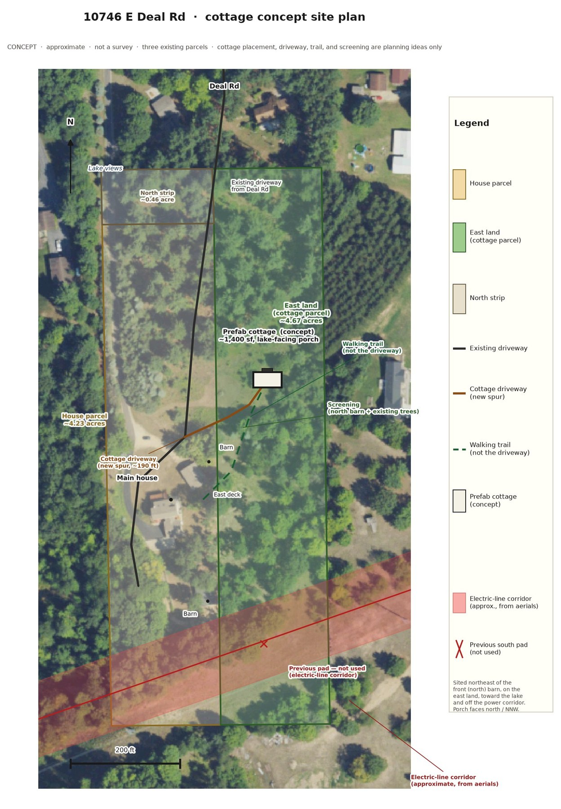
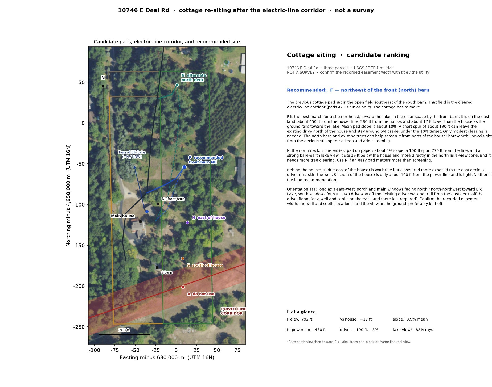
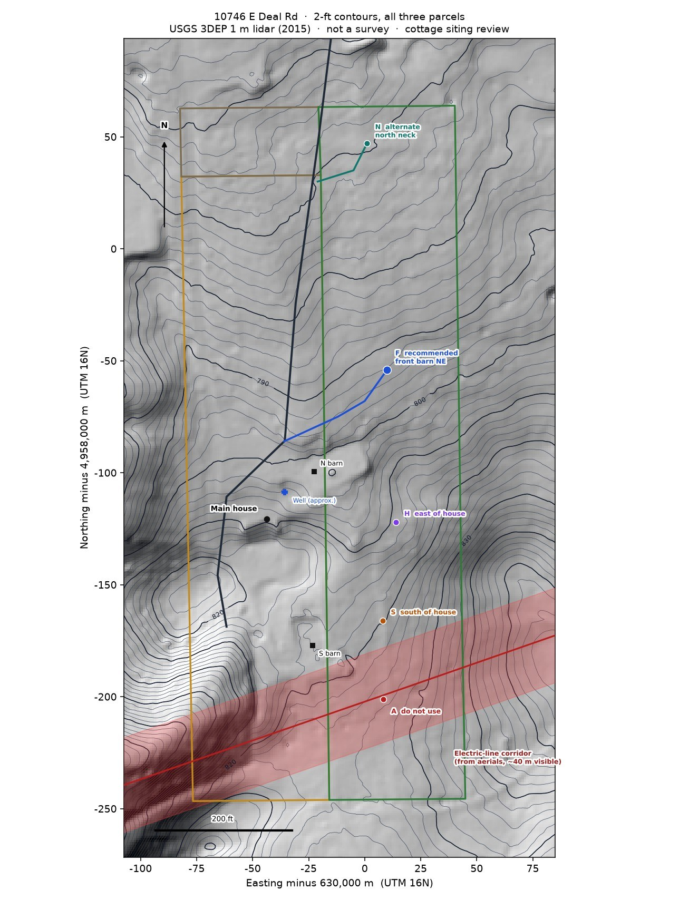
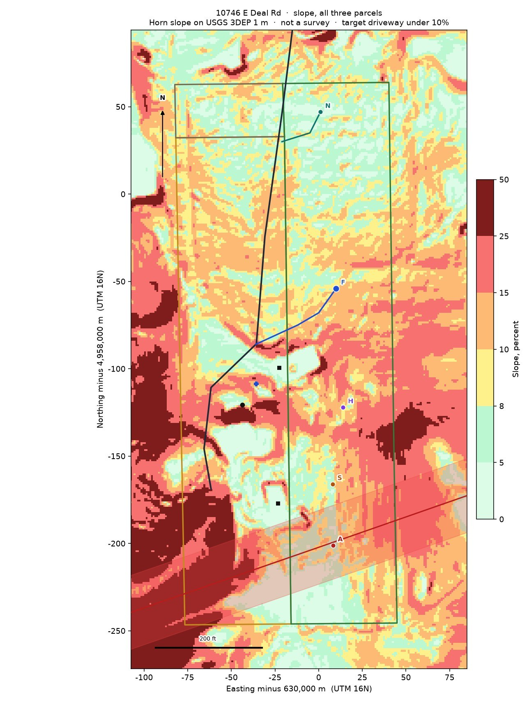
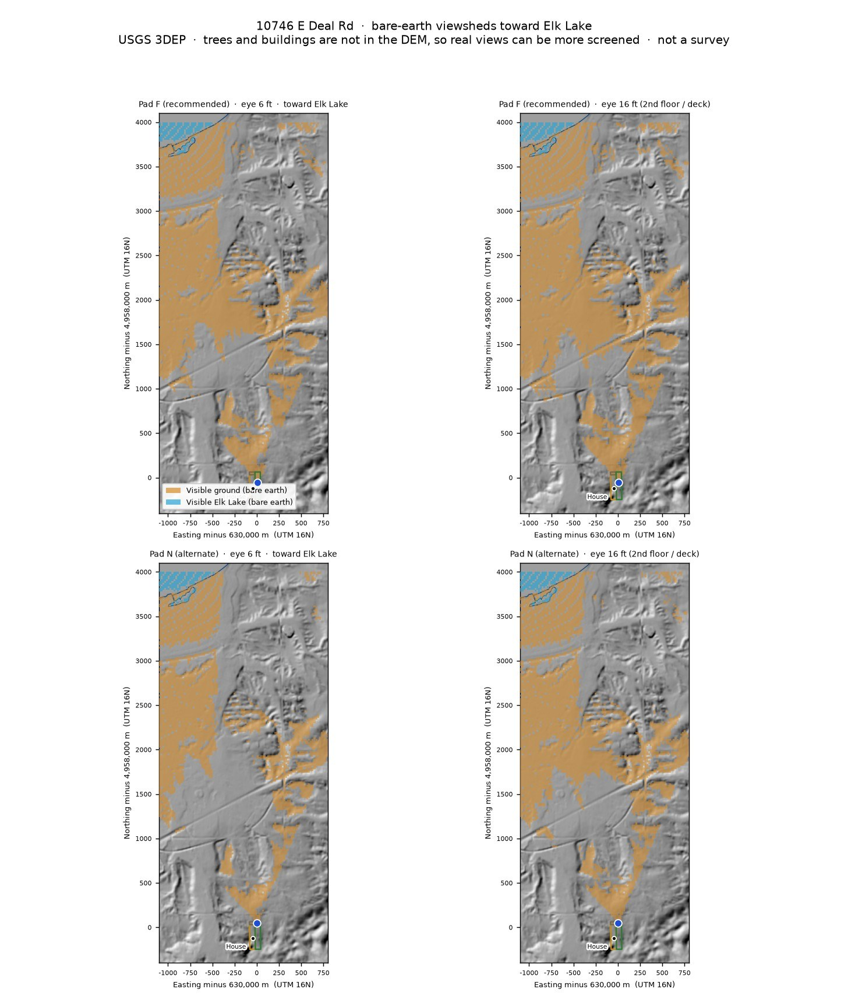
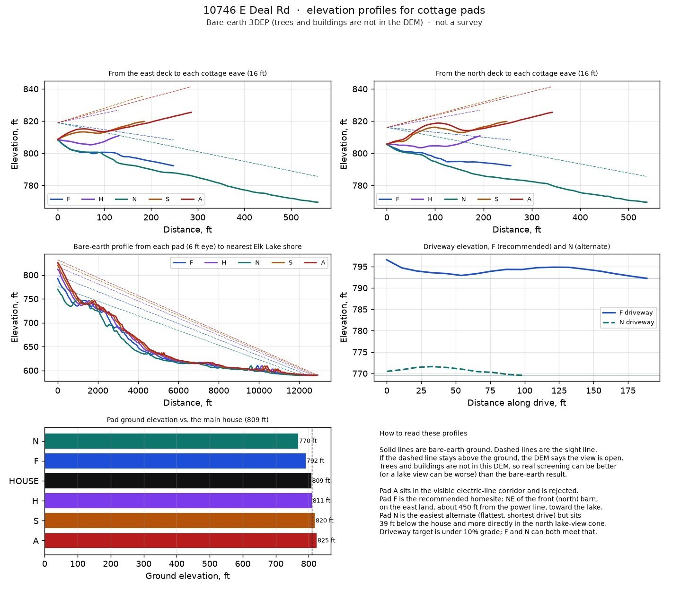

This review uses the USGS 3DEP 1-meter lidar DEM (2015 Grand Traverse collection) over the house parcel, the north strip, and the east land. It includes 2-foot contours, a slope map, bare-earth viewsheds toward Elk Lake from each candidate pad at about 6 feet (eye height) and about 16 feet (a second floor or deck), and line-of-sight profiles between the main house and each pad. Driveway grades are checked against a 10% target. Septic-suitable ground is gentle slope, off the power corridor, and away from the well and the lake. These drawings are planning tools, not a survey.
Recommended placement
The first cottage concept sat just southeast of the south barn, in the open south field. That field is the cleared electric-line corridor. The cottage has to move, to the northeast, toward Elk Lake.
Pad F, northeast of the front (north) barn on the east land, is the recommended homesite. It matches a northeast, lake-facing clearing by the front barn, stays about 450 feet from the power line, and needs only modest tree clearing. The ground sits at about 792 feet, 17 feet below the house, as the land falls toward the lake. Mean pad slope is about 10%. A new gravel spur of about 250 feet can leave the existing drive north of the house and stay around 5% grade. The north barn and existing trees can help screen the cottage from parts of the house; bare-earth line-of-sight from the decks is still open, so keep and add screening.
The cottage is not on the small parcel directly north of the house. That parcel is 13-002-018-01, 0.46 acre, a strip about 100 by 200 feet immediately north of the house lot (13-002-018-00, 4.23 acres). Pad F and pad N both sit on the larger east land, 13-002-018-30, 4.67 acres, the long north–south lot along the east side of the house. Pad F is about 300 feet northeast of the house and about 220 feet northeast of the front barn, in a lightly treed clearing, about 17 feet below the house, with a mean slope of about 10% and about 450 feet from the power line. Pad N, farther north on the same east land (not on the 0.46-acre strip), is flatter and a bit stronger on paper for the lake view, but it sits in denser pines, 39 feet below the house, and more directly in the view from the house. A mid-northeast clearing between F and N is workable but needs more clearing than F and offers less barn screening. Due-east of the house (pad H) is closer and more exposed. The best northeast spot that is actually viable is pad F.
The recommended cottage is a 2 bedroom, 2 bath Michigan modular of about 1,040 square feet (Rochester American R31-26). Orient it with its long axis north–south so the catalog porch on the living-room end faces north / north-northwest toward Elk Lake, the bedrooms face south, and the front door and a two-car parking pad face west, toward the drive and the front barn. Give it its own driveway, not the house parking loop, and a walking trail from the east deck that stays off the drive. There is room on the east land for a well and septic (a perc test is required). The east parcel does not have its own Deal Road frontage, so the spur has to come off the existing drive, which itself leaves Deal Rd between the neighbor lots at 10754 and 10778 Deal Rd before it reaches the subject parcels. The floor plan, concept views, and planning costs are in the cottage section.

The other pads
- N, the north neck, is the easiest pad on paper: about 4% slope, a 100-foot spur, 770 feet from the line, and a strong bare-earth lake view. It sits 39 feet below the house and more directly in the north lake-view cone, and it needs more tree clearing. Use N if an easy pad matters more than screening.
- H, due east of the house, is workable but closer and more exposed to the east deck. A drive must skirt the well.
- S, south of the house, is only about 100 feet from the power line and is tight. A south spur also fights the existing drain field.
- A, the previous south pad, is not used. It sits in the visible electric-line corridor, only a few feet from the centerline.
Chosen placement

Candidate ranking

| Pad | Role | Elev. | Vs house | Mean slope | To power line | Drive | Lake rays, 6 / 16 ft |
|---|---|---|---|---|---|---|---|
| F | Recommended — front barn, NE | 792 ft | −17 ft | 9.9% | ~450 ft | ~250 ft, ~5% | 88% / 88% |
| N | Alternate — north neck | 770 ft | −39 ft | 4.1% | ~770 ft | ~106 ft, under 10% | 89% / 89% |
| H | East of the house | 811 ft | +2 ft | 10.8% | ~234 ft | must skirt the well | 100% / 100% |
| S | South of the house | 820 ft | +11 ft | 9.4% | ~104 ft | tight to corridor | 100% / 100% |
| A | Do not use — in the corridor | 825 ft | +16 ft | — | ~5 ft | — | — |
Lake-ray percentages are bare-earth viewsheds toward Elk Lake. Line-of-sight from the east and north decks is also open on the bare-earth DEM for every pad; trees, not terrain, are the real screen from the house.
2-foot contours

Slope

Viewsheds toward Elk Lake
Each panel is a bare-earth viewshed from a cottage pad, looking in a north / north-northwest cone toward Elk Lake. Gold is visible ground; blue is visible water. The 16-foot panels stand in for a second floor or a high deck. Because trees are not in the DEM, a winter view may be closer to these maps, and a summer view may be more filtered.

Elevation profiles and line-of-sight
Solid lines are bare-earth ground. Dashed lines are sight lines. If a dashed line stays above the ground, the DEM says that view is open. Profiles run from the east and north decks to each cottage eave (16 ft), from each pad to the nearest Elk Lake shore, and along the F and N driveway routes.

What to confirm on the ground
- The recorded width of the electric-line easement, and any build or planting limits, with the title company and the utility.
- The wellhead and the existing drain field, so a cottage drive and a new septic stay clear of them.
- The real lake view from pad F, preferably leaf-off, at ground height and from a possible loft or porch.
- A perc test on the east land, off the corridor and at least 50 feet from a well.
- That a cottage driveway spur off the existing drive is allowed, since the east parcel has no Deal Road frontage.
Sources: USGS 3DEP 1 m DEM, NAIP and Esri aerials, Grand Traverse County parcel polygons, and an OpenStreetMap outline of Elk Lake. Corridor geometry is from visible poles and clearing, not a recorded easement sketch. November 13, 2026, America/Detroit.